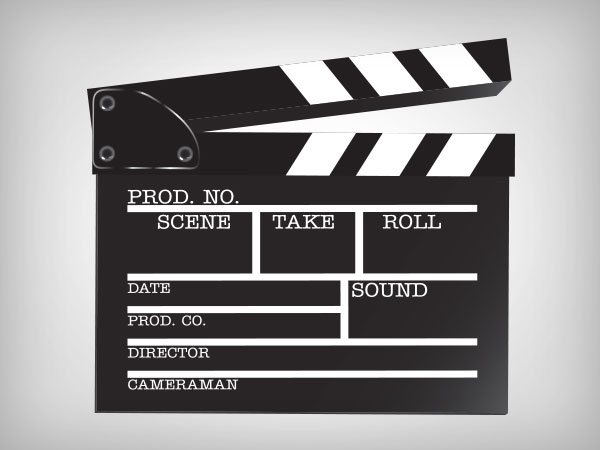

When Video is stop, please speak.
Speak now.
No speech was detected. You may need to adjust your microphone settings.
Click the "Allow" button above to enable your microphone.
Permission to use microphone was denied.
Permission to use microphone is blocked. To change, go to chrome://settings/contentExceptions#media-stream
Web Speech API is not supported by this browser. Upgrade to Chrome version 25 or later.